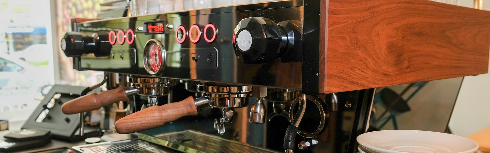
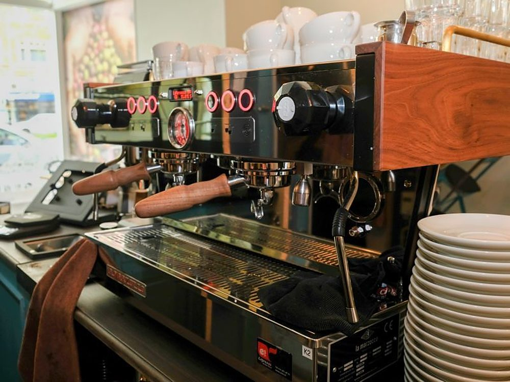
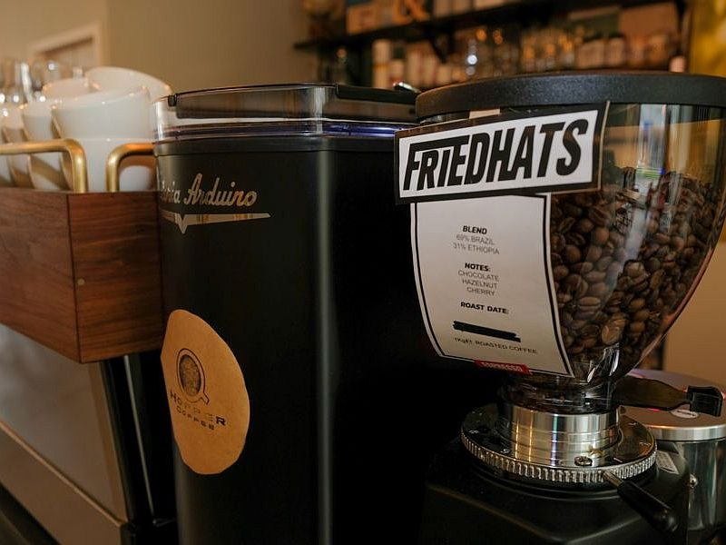
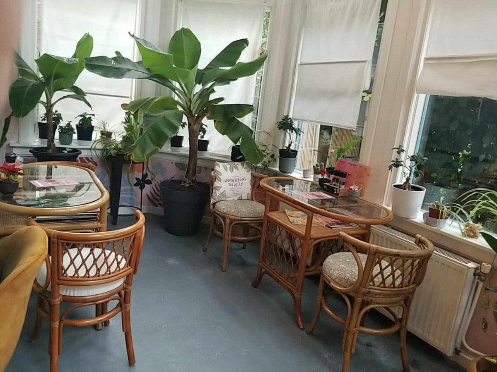
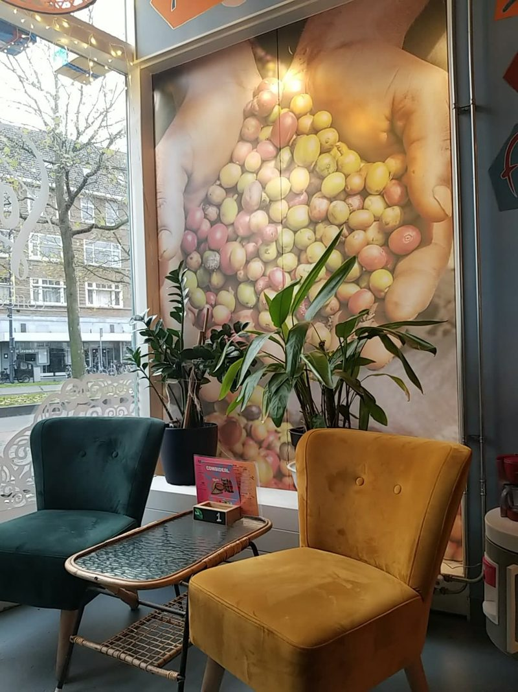
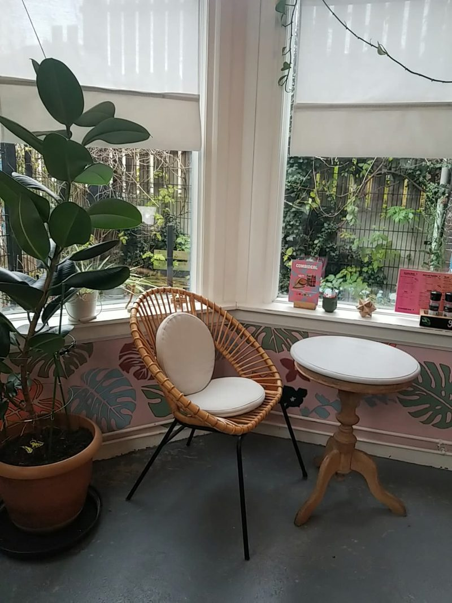
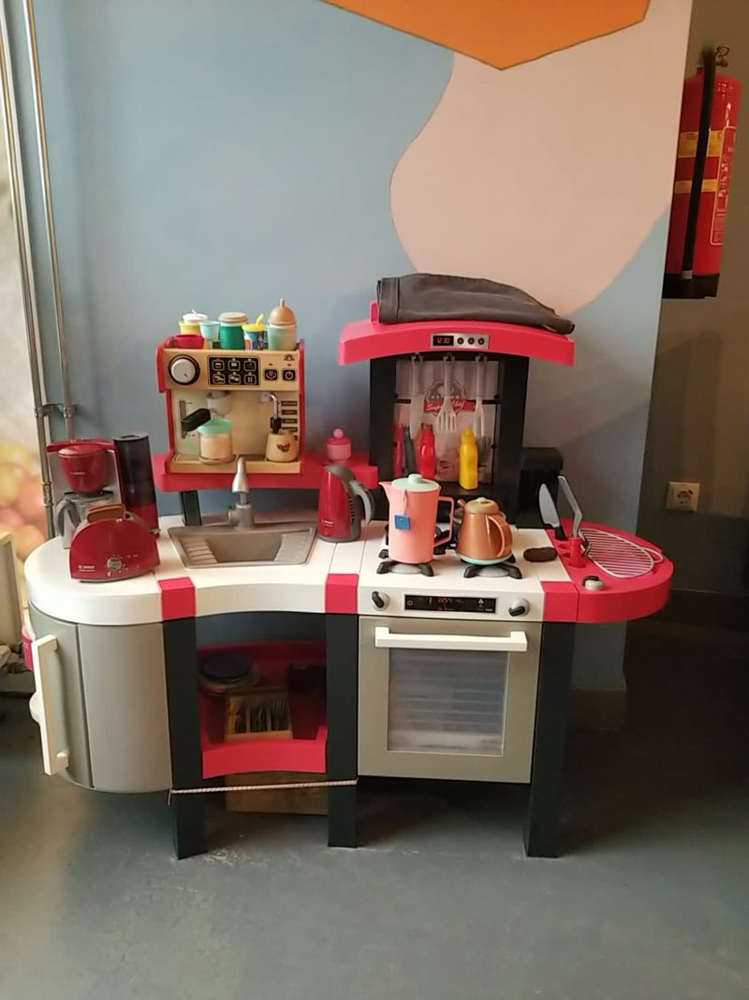
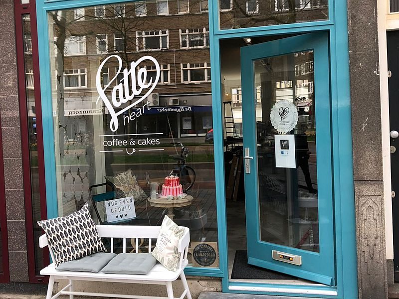

Koffie en huisgemaakte taart
Je plekje in Schiedam voor ontbijt, lunch of iets zoets tussendoor, aan de Broersvest. Voor hier of onderweg, vegan of glutenvrij.
Klassiekers en seizoenstoppers
We serveren de hele dag ontbijt, en al onze producten zijn ook on the go te krijgen. Heb je weinig tijd? Geen probleem.
Koffie
Van espresso en flat white tot red eye en frappuccino. Ook met soja, kokos, haver of amandel.
vanaf € 3,20Bijzondere lattes
Paarse ube, pitaya, matcha en blue butterfly pea, opgeschuimd met warme melk.
€ 5,00All day breakfast
American pancakes, granola bowls met huisgemaakte granola en roerei op brood.
vanaf € 6,00Lunch
Tosti's, brood met avocado of hummus, huisgemaakte soep en salades.
vanaf € 6,00Taart uit eigen bakkerij
Verse, huisgemaakte producten van onze eigen banketbakker. Een greep uit de kaart:
- Mango-Passionfruit Cheesecake vegan, glutenvrij
- Bounty Cheesecake vegan, glutenvrij
- Strawberry Mojito Cheesecake vegan, glutenvrij
- Raspberry-Pistachio Chocolate Taart vegan, glutenvrij
- Brownie Cheesecake
- Tiramisu
- Red Velvet Muffins
- Banana Bread
Vegan of glutenvrij? Latte Heart heeft je.
We doen ons best om ook vegan en glutenvrije opties te hebben, voor hier of onderweg.

We verstaan de kunst van koffie zetten
Onze mooie espressomachine van La Marzocco is echt het hart van Latte Heart. Daar wordt het zwarte goud in de kopjes gezet.
Bij ons valt altijd wat te beleven: je kijkt gewoon mee hoe de barista jouw koffie maakt. Liever iets anders? We hebben ook chai, verse munt- en gemberthee, smoothies en mocktails.
Bekijk alle dranken →Een plek om even te blijven zitten
Binnen of buiten: we hebben een terras met toegang tot het park, een serre vol planten en gratis wifi. En voor de kinderen is er een speelhoek.

De serre
Rotan stoelen tussen de planten.

Lekker zitten
Fauteuils bij het raam.

Een rustig zitje
Rotan stoel en tafeltje bij het raam.

De speelhoek
Met een eigen keukentje voor de kinderen.

Latte Heart aan de Broersvest
Latte Heart is de koffiehotspot in Schiedam, waar de barista en de banketbakker je hartelijk ontvangen met verse, huisgemaakte producten. We gebruiken de beste ingrediënten voor alles wat we zelf maken.
Kom langs of bel even
Een tafeltje reserveren voor dezelfde dag kan alleen telefonisch.